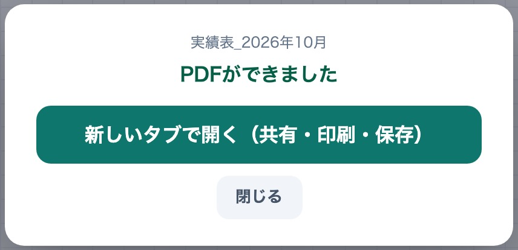
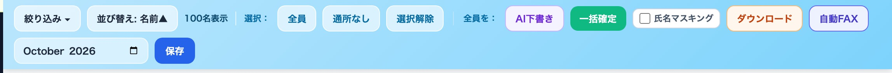
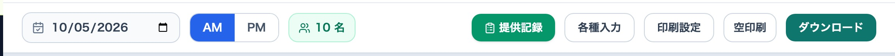
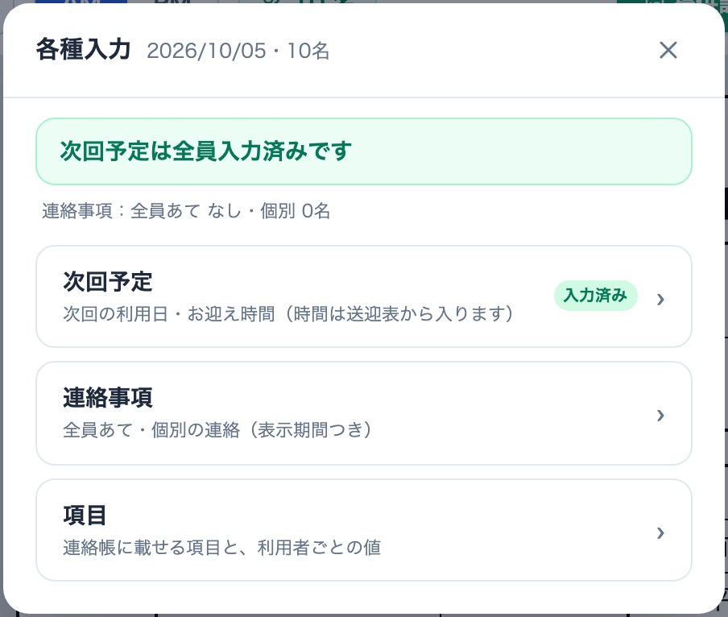
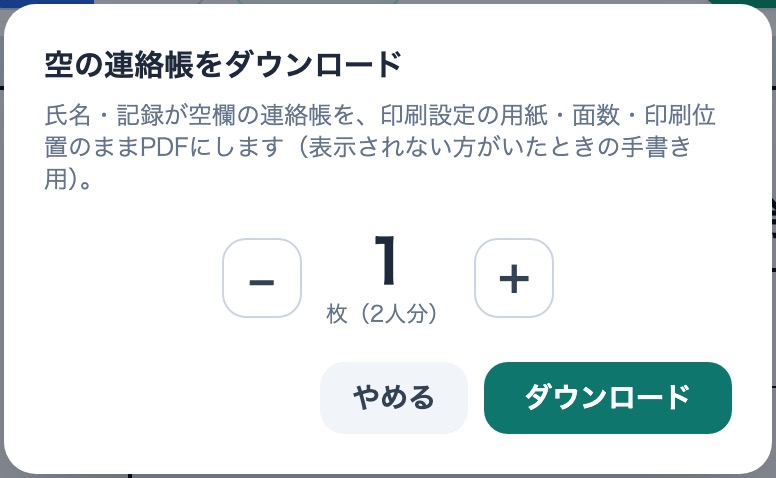
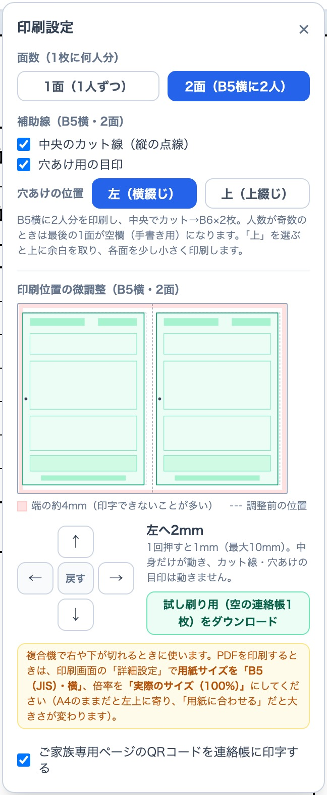
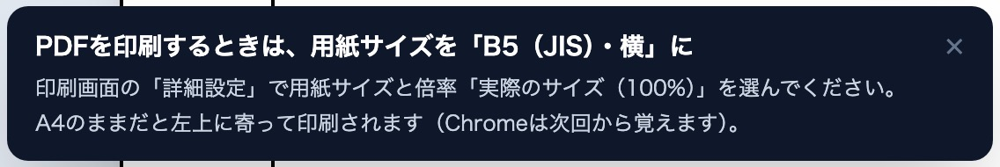
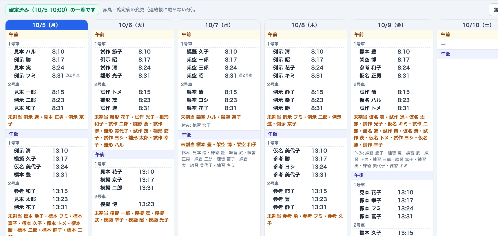
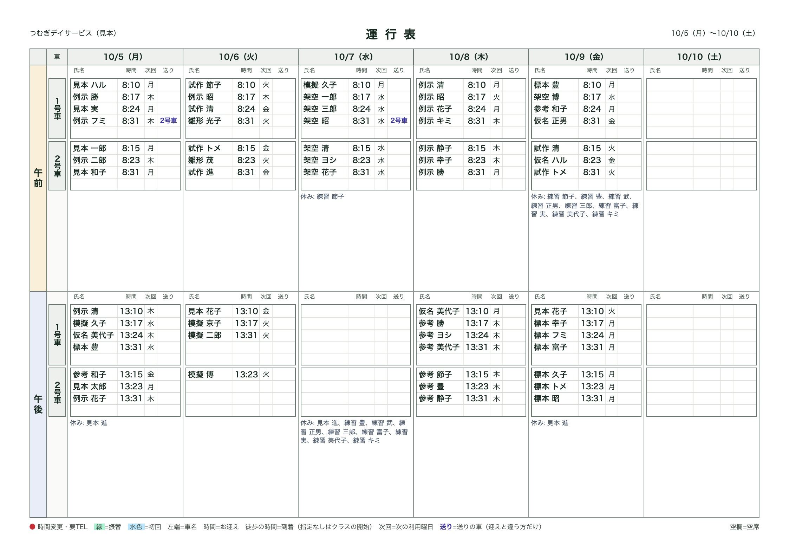
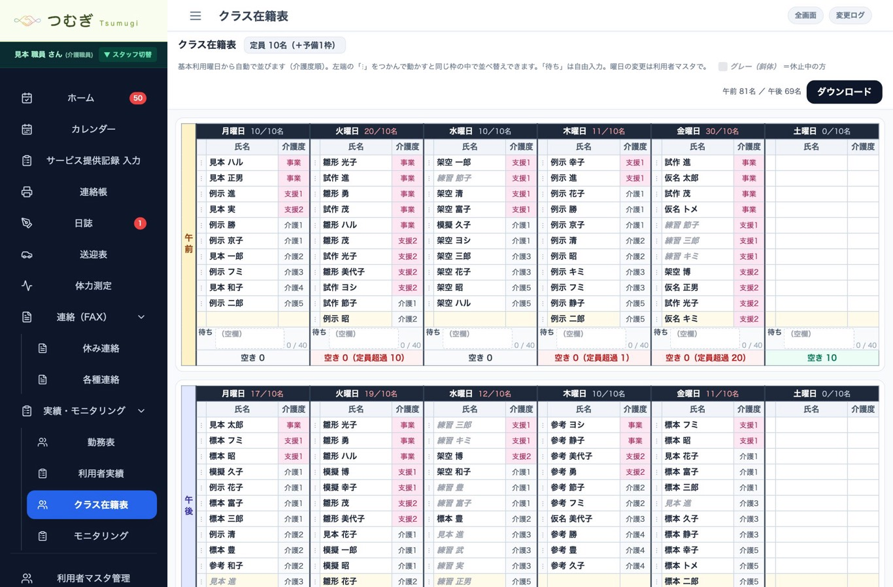

事業所向け
10月1日以降の更新分のまとめ（10月5日 配信） ／ ワンズスタイル本部
| 画面 | 変わったこと | ページ |
|---|---|---|
| 書類の出力（全画面） | 「印刷」は「ダウンロード」に統一。押すとすぐPDFができ、iPadでも同じ仕上がり。氏名マスキングはダウンロードの横に | 2 |
| 連絡帳 | 「各種入力」にまとめた（次回予定の未入力が一目で分かる）／ダウンロードだけに／空印刷もダウンロード | 3 |
| 連絡帳の印刷設定 | 印刷位置の微調整（用紙の図つき）・試し刷り／PDFを印刷するときの用紙サイズ | 4 |
| 送迎表 | 「確定」と確定の解除／確定済み一覧／赤丸は連絡帳で伝えていない変更だけ／運行表に「送り」の列 | 5 |
| クラス在籍表（新） | 実績・モニタリングに追加。曜日×午前・午後の在籍と空き枠 | 6 |
| サービス提供記録 | 血圧の再検の方式／運動の列幅／用紙に収まる提供記録 | 7 |
| モニタリング・フェイスシートほか | 一括確定・締切後の自動確定／フェイスシートの整理と更新履歴／BMI／送付履歴 | 7 |
| よくあるご質問 | Q&A | 8 |
送迎表・日誌・連絡帳・休み連絡・各種連絡・モニタリング・分析・計画書・フェイスシート・利用者実績・クラス在籍表など、書類を出すボタンはすべて ダウンロード になりました。押すとプレビューを通らずに、すぐPDFができます。

| パソコン | ダウンロード → PDFが保存される（またはブラウザで開く）→ PDFを開いて印刷。複合機でFAXするときもこのPDFから。 |
|---|---|
| iPad | ダウンロード →「新しいタブで開く」→ 画面右上の共有ボタン（□↑）→「プリント」。「ファイルに保存」で保存もできます。 |
初めてのダウンロードは数秒かかることがあります（「PDFを作成しています…」が出ている間はお待ちください）。

マスキングがあるのは、ケアマネ・ご家族など外へ出す書類の画面だけです：休み連絡・各種連絡・計画書と送付状・利用者実績・モニタリング・分析（個人）・フェイスシート。連絡帳・日誌にはありません。
ダウンロードしただけでは、送付履歴には残りません。休み連絡・各種連絡の送付状は、ダウンロードすると「ダウンロード済」、印刷すると「連絡済」と表示されます（今まで通り）。


これまで別々だった「項目」「連絡事項」「次回予定」を1つにまとめました。
連絡事項は、欄に収まる量（使用量 ○%）が表示され、92%を超えると保存できません（太字や大きい文字でも切れないように）。

空印刷 を押すと枚数を選ぶ画面が出ます。−／＋で枚数を選んで ダウンロード を押すと、氏名・記録が空欄の連絡帳がPDFになります（印刷設定の用紙・面数・位置のまま）。表示されない方がいたときや、急な来所の手書き用です。

複合機で連絡帳の右や下が切れるときに使います。
動くのは連絡帳の中身だけです。2面の中央のカット線と穴あけの目印は動きません。設定は店舗の全端末で共通です。
PDFを印刷するとき、印刷画面の用紙はプリンタのいつもの用紙（A4）のままになっています。A4のままだと、連絡帳が左上に小さく寄って印刷されます。印刷画面の 「詳細設定」 で、次のように選んでください。
Chromeは一度選ぶと次回から覚えます。「用紙に合わせる」を選ぶと大きさが変わるので、「実際のサイズ」にしてください。

赤丸は、前回の来所で連絡帳を渡した後に変えた分にだけ付きます。次の連絡帳に載る変更には付きません。赤丸の方は、ご家族へ電話などでお伝えください。
ご家族・ケアマネの画面のお迎え時間は、確定前は「予定（確定前）」、確定後は「確定」と表示されます。


サイドバーの 実績・モニタリング → クラス在籍表。曜日ごとに、午前・午後の在籍者（氏名・介護度）を定員＋予備1枠で並べた表です。空き枠と定員超過が一目で分かるので、新規の受け入れや振替の相談に使えます。

血圧のマスの横の 再 を押すと、いまの値と時刻が欄の下に小さく控えられ、欄が空になります。そのまま2回目の値を入れてください（何回でも可・回数は「再1」「再2」）。控えの「削除」で元に戻せます。1回目を入れた時刻は自動で記録されます。
いちばん長い運動の名前に合わせた幅で、全部の列がそろいます。名前が短い店舗は表全体が細くなります。
A4縦で必ず1枚に収まる作りです。運動が1行の店舗は1ページ7日、2段の店舗は5日。備考は70文字・特記は100文字までです。
全員（または対象にチェック）→ 一括確定 で、まとめて確定できます。締切（月末18時）を過ぎた記入済みの下書きは自動で確定されます。確定すると担当ケアマネの画面に載り、お知らせが届きます。
項目を整理しました（見学日・初回作成日／更新日、医療・健康、ケアマネ関連、備考／追記 など）。ご家族（代表者）やケアマネが画面から更新すると、「いつ・誰が・どこをどう変えたか」が更新履歴に残り、ホームのお知らせにも出ます。
体力測定で身長・体重を入れると、BMIが自動で計算され、体力測定・分析（個人）にグラフが出ます。
印刷で切れるおそれのある入力欄には「現在／最大」の文字数が出ます（印刷には出ません）。
不具合・ご要望は、画面の写真を添えて本部（髙橋）へ直接ご連絡ください。急ぎのときはお電話で。